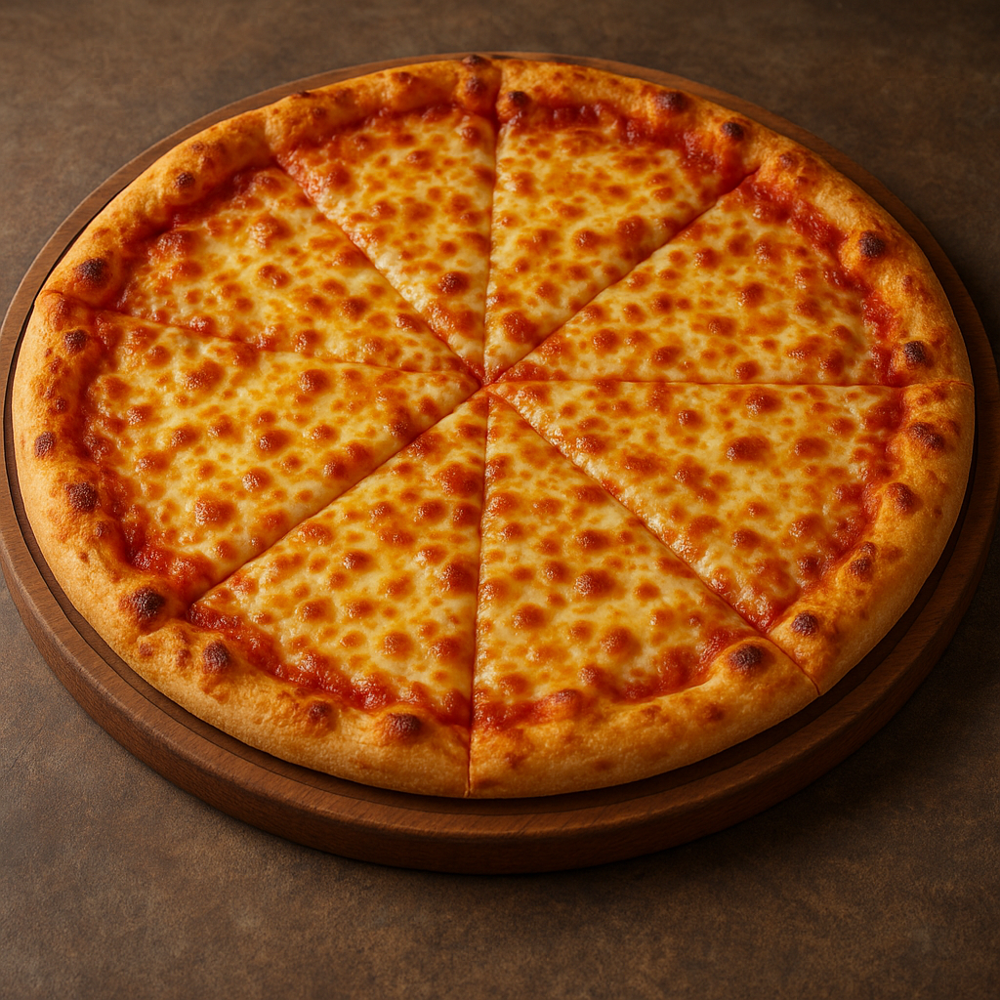

🍕 Homemade Pizza
Description
This homemade pizza is a delicious and customizable dish perfect for any occasion. Whether you're craving a classic Margherita, a meat lover's dream, or a veggie-packed delight, this recipe serves up crispy crust, savory tomato sauce, and perfectly melted cheese — straight from your own oven. 🍽️
Ingredients
- Pizza dough
- Tomato sauce
- Mozzarella cheese
- Olive oil
- Your favorite toppings (e.g., pepperoni, bell peppers, mushrooms)
Steps
- Preheat the oven to 475°F (245°C).
- Roll out the pizza dough on a floured surface.
- Spread tomato sauce evenly over the dough.
- Sprinkle cheese and add your favorite toppings.
- Drizzle a little olive oil on top.
- Bake for 12-15 minutes, until the crust is golden and the cheese is bubbly.